Broken Authentication
Intro
Authentication is the process of verifying a claim that a system entity or resource has a certain attribute value.
Authorization is an approval that is granted to a system entity or access a system resource.
| Authentication | Authorization |
|---|---|
| determines whether users are who they claim to be | determines what users can and cannot access |
| challenges the user to validate credentials | verifies whether access is allowed through policies and rules |
| usually done before authorization | usually done after successful authentication |
| it usually needs the user’s login details | while it needs user’s privileges or security levels |
| generally, transmits info through an ID token | generally, transmits info through an Access Token |
The most widespread authentication method in web apps is login forms, where users enter their username and password to prove their identity.
Common Authentication Methods
| Method | Description |
|---|---|
| knowledge-based authentication | relies on something that the user knows to prove their identity (passwords, passphrases, PINs, etc.) |
| ownership-based authentication | relies on something the user posseses (ID cards, security tokens, smartphones with authentication apps, etc.) |
| inherence-based authentication | relies on something the user is or does (fingerprints, facial patterns, voice recognition, etc.) |
Single-Factor vs Multi-Factor Authentication
Single-factor authentication relies solely on a single method like a password while multi-factor authentication involves multiple authentication methods like a password plus a time-based one-time password.
Knowledge-based Authentication
… is prevalent and comparatively easy to attack. This authentication method suffers from reliance on static personal information that can be potentially obtained, guessed, or brute-forced.
Ownership-based Authentication
…(s) are inherently more secure. This is because physical items are more diffcult for attackers to acquire or replicate compared to information that can be phished, guessed or obtained through data breaches. These systems can be vulnerable to physical attacks, such as stealing or cloning the object, as well as cryptographic attacks on the algorithm it uses.
Inherence-based Authentication
… provides convenience and user-friendliness. Users don’t need to remember complex passwords or carry physical tokens; they simply provide biometric data, such as a fingerprint or facial scan, to gain access. This streamlined authentication process enhances user experience and reduces the likelihood of security breaches resulting from weak passwords or stolen tokens. However, inherence-based authentication systems must address concerns regarding privacy, data security, and potential biases in biometric recognition algorithms to ensure widespread adoption and trust among users.
Brute-Force Attacks
Enumerating Users
User enumeration vulnerabilities arise when a web application responds differently to registered/valid and invalid inputs for authentication endpoints. User enumeration vulnerabilities frequently occur in functions on the user’s name, such a user login, user registration, and password reset. A web app revealing whether a username exists may help a legitimate user identify that they failed to type their username correctly. The same applies to an attacker trying to determine valid usernames.
Unknown user example:
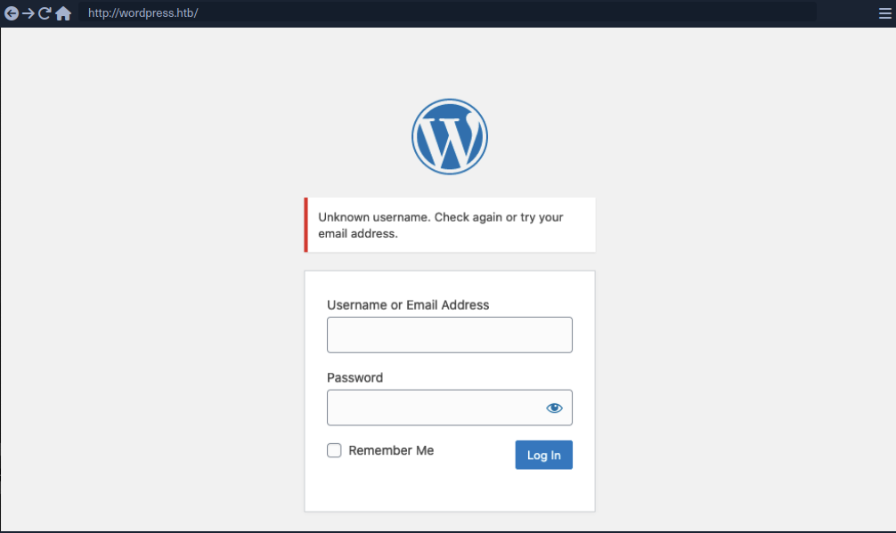
Valid user example:
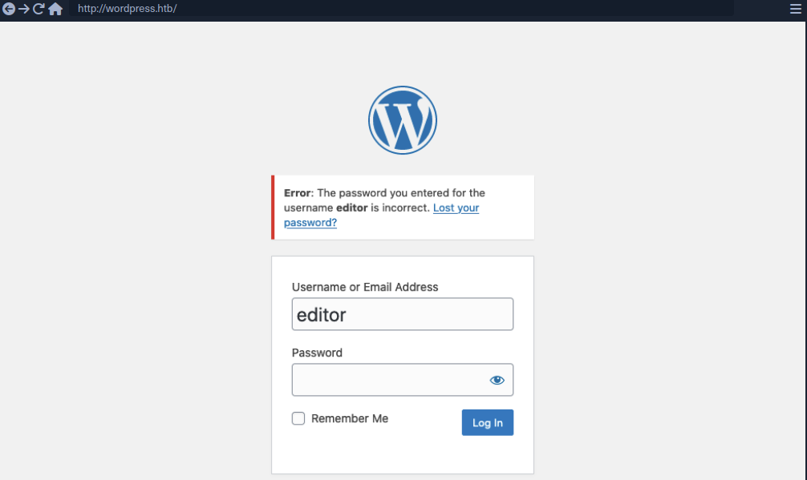
As you can see, user enumeration can be a security risk that a web application deliberately accepts to provide a service.
Enumerating Users via Different Error Messages
To obtain a list of valid users, an attacker typically requires a wordlist of usernames to test. Usernames are often less complicated than passwords. They rarely contain special chars when they are not email addresses. A list of common users allows an attacker to narrow the scope of a brute-force attack or carry out targeted attacks against support employees or users. Also, a common password could be easily sprayed against valid accounts, often leading to a successful account compromise. Further ways of harvesting usernames are crawling a web application or using public information, such as company profiles on social networks.
Invalid user example:
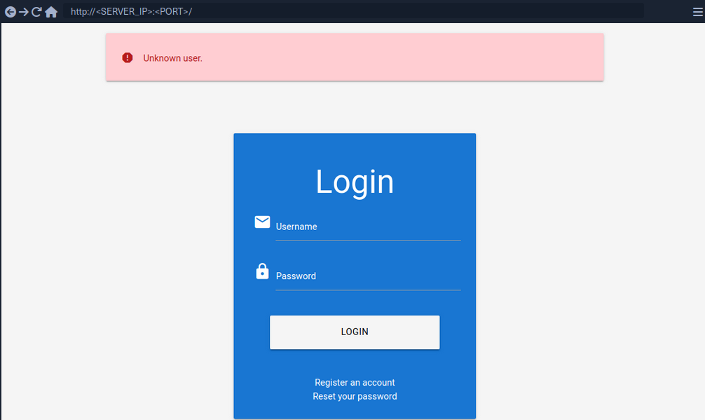
Valid user example:
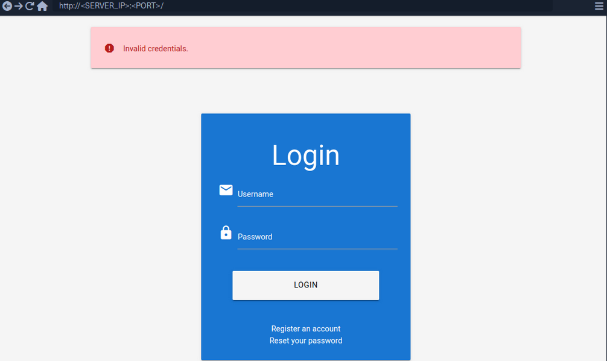
To exploit this difference in error messages returned:
d41y@htb[/htb]$ ffuf -w /opt/useful/seclists/Usernames/xato-net-10-million-usernames.txt -u http://172.17.0.2/index.php -X POST -H "Content-Type: application/x-www-form-urlencoded" -d "username=FUZZ&password=invalid" -fr "Unknown user"
<SNIP>
[Status: 200, Size: 3271, Words: 754, Lines: 103, Duration: 310ms]
* FUZZ: consuelo
User Enumeration via Side-Channel Attacks
Side-channel attacks do not directly target the web application’s response but rather extra information that can be obtained or inferred from the response. An example of a side channel is the response timing, the time it takes for the web application’s response to reach you. Suppose a web app does database lookups only for valid usernames. In that case, you might be able to measure a difference in the response time and enumerate valid usernames this way, even if the response is the same.
Brute-Forcing Passwords
After succesfully identifying valid users, password-based authentication relies on the password as a sole measure for authenticating the user. Since users tend to select an easy-to-remember password, attackers may be able to guess or brute-force it.
You can either directly start using a wordlist or, maybe, you’re lucky enough to see messages like this when visiting a website:
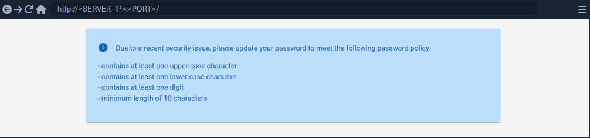
By using grep you’re able to narrow down the wordlist (rockyou.txt) to about 150000 passwords.
d41y@htb[/htb]$ grep '[[:upper:]]' /opt/useful/seclists/Passwords/Leaked-Databases/rockyou.txt | grep '[[:lower:]]' | grep '[[:digit:]]' | grep -E '.{10}' > custom_wordlist.txt
d41y@htb[/htb]$ wc -l custom_wordlist.txt
151647 custom_wordlist.txt
You can now use ffuf again:
d41y@htb[/htb]$ ffuf -w ./custom_wordlist.txt -u http://172.17.0.2/index.php -X POST -H "Content-Type: application/x-www-form-urlencoded" -d "username=admin&password=FUZZ" -fr "Invalid username"
<SNIP>
[Status: 302, Size: 0, Words: 1, Lines: 1, Duration: 4764ms]
* FUZZ: Buttercup1
Brute-Forcing Password Reset Tokens
Many web apps implement a password-recovery functionality if a user forgets their password. This password-recovery functionality typically relies on a one-time reset token, which is transmitted to the user via SMS or E-Mail. The user can then authenticate using this token, enabling them to reset their password and access their account.
Identifying Weak Reset Tokens
Reset Tokens are secret data generated by an application when a user requests a password reset. The user can then change their password by representing the reset token.
Since password reset tokens enable an attacker to reset an account’s password without knowlegde of the password, they can be leveraged as an attack vector to take over a victim’s account if implemented incorrectly. Password reset flows can be complicated because they consist of several sequential steps.
Reset flow example:
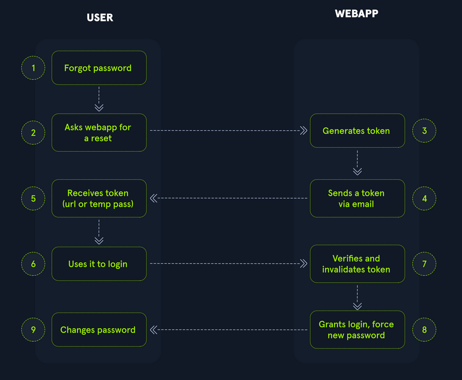
To identify weak reset tokens, you typically need to create an account on the web app, request a password reset token, and then analyze it.
Hello,
We have received a request to reset the password associated with your account. To proceed with resetting your password, please follow the instructions below:
1. Click on the following link to reset your password: Click
2. If the above link doesn't work, copy and paste the following URL into your web browser: http://weak_reset.htb/reset_password.php?token=7351
Please note that this link will expire in 24 hours, so please complete the password reset process as soon as possible. If you did not request a password reset, please disregard this e-mail.
Thank you.
The example reset link contains the reset token in the GET-parameter token. In this example the token is 7351. Given that the token consists of only a 4-digit number, there can be only 10000 possible values. This allows you to hijack users’ accounts by requesting a password reset and then brute-forcing the token.
Attacking Weak Reset Tokens
d41y@htb[/htb]$ seq -w 0 9999 > tokens.txt
d41y@htb[/htb]$ head tokens.txt
0000
0001
0002
0003
0004
0005
0006
0007
0008
0009
Assuming that there are users currently in the process of resetting their passwords, you can try to brute-force all active reset tokens. If you want to target a specific user, you should send a password reset request for that user first to create a reset token.
d41y@htb[/htb]$ ffuf -w ./tokens.txt -u http://weak_reset.htb/reset_password.php?token=FUZZ -fr "The provided token is invalid"
<SNIP>
[Status: 200, Size: 2667, Words: 538, Lines: 90, Duration: 1ms]
* FUZZ: 6182
Brute-Forcing 2FA Codes
2FA provides an additional layer of security to protect user accounts from unauthorized access. Typically, this is achieved by combining knowledge-based authentication with ownership-based authentication. However, 2FA can also be achieved by combining any other two of the major three authentication categories. Therefore, 2FA makes it significantly more difficult for attackers to access an account even if they manage to obtain the user’s credentials. By requiring users to provide a second form of authentication, such a a one-time code generated by an authentication app or sent via SMS, 2FA mitigates the risk of unauthorized access. This extra layer of security significantly enhances the overall security posture of an account, reducing the likelihood of successful account breaches.
Attacking 2FA
One of the most common 2FA implementations relies on the user’s password and a time-based one-time password provided to the user’s smartphone by an authentication app or via SMS. These TOTPs typically consist only of digits, making them potentially guessable if the length is insufficient and the web app does not implement measures against successive submission of incorrect TOTPs.
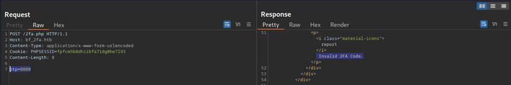
In this example, the TOTP is passed in the opt POST parameter, and you also need to specify the session token in the PHPSESSID.
To attack:
d41y@htb[/htb]$ seq -w 0 9999 > tokens.txt
d41y@htb[/htb]$ ffuf -w ./tokens.txt -u http://bf_2fa.htb/2fa.php -X POST -H "Content-Type: application/x-www-form-urlencoded" -b "PHPSESSID=fpfcm5b8dh1ibfa7idg0he7l93" -d "otp=FUZZ" -fr "Invalid 2FA Code"
<SNIP>
[Status: 302, Size: 0, Words: 1, Lines: 1, Duration: 648ms]
* FUZZ: 6513
[Status: 302, Size: 0, Words: 1, Lines: 1, Duration: 635ms]
* FUZZ: 6514
<SNIP>
[Status: 302, Size: 0, Words: 1, Lines: 1, Duration: 1ms]
* FUZZ: 9999
Weak Brute-Force Protection
Rate Limits
Rate limiting is a crucial technique employed in software development and network management to control the rate of incoming requests to a system or API. Its primary purpose is to prevent servers from being overwhelmed by too many requests at once, prevent system downtime, and prevent brute-force attacks. By limiting the number of requests allowed within a specified time frame, rate limiting helps maintain stability and ensures fair usage of resources for all users. It safeguards against abuse, such as DoS attacks or excessive usage by individual clients, by enforcing a maximum threshold on the frequency of requests.
When an attacker conducts a brute-force attack and hits the rate limit, the attack will be thwarted. A rate limit typically increments the response time iteratively until a brute-force attack becomes infeasible or blocks the attacker from accessing the service for a certain amount of time.
A rate limit should only be enforced on an attacker, not regular users, to prevent Dos scenarios. Many rate limit implementations rely on the IP address to identify the attacker. However, in a real-world scenario, obtaining the attacker’s IP address might not always be as simple as it seems. For instance, if there are middleboxes such as reverse proxies, load balancers, or web caches, a request’s source IP address will belong to the middelbox, not the attacker. Thus, some rate limits rely on HTTP headers such as X-Forwarded-For to otain the actual source IP address.
However, this causes an issue as an attacker can set arbitrary HTTP headers in request, bypassing the rate limit entirely. This enables an attacker to conduct a brute-force attack by randomizing the X-Forwarded-For header in each HTTP request to avoid the rate limit.
CAPTCHAs
A Completely Automated Public Turing test to tell Computers and Humans Apart (CAPTCHA) is a security measure to prevent bots from submitting requests. By forcing humans to make requests instead of bots or scripts, brute-force attacks become a manual task, making them infeasible in most cases. CAPTCHAs typically present challenges that are easy for humans to solve but difficult for bots, such as identifying distorted text, selecting particular objects from images, or solving simple puzzles. By requiring users to complete these challenges before accessing certain features or submitting forms, CAPTCHAs help prevent automated scripts from performing actions that could be harmful, such as spamming forums, creating fake accounts, or launching brute-force attacks on the login pages. While CAPTCHAs serve an essential purpose in deterring automated abuse, they can also present usability challenges for some users, particularly those with visual impairments or specific cognitive disabilities.
From a security perspective, it is essential not to reveal a CAPTCHA’s solution in the response.
Additionally, tools and browser extensions to solve CAPTCHAs automatically are rising. Many open-source CAPTCHA solvers can be found. In particular, the rise of AI-driven tools provides CAPTCHA-solving capabilities by utilizing powerful image recognition or voice recognition machine learning models.
Password Attacks
Default Credentials
Many web apps are set up with default credentials to allow accessing it after installation. However, these credentials need to be changed after the initial setup of the web application; otherwise, they provide an easy way for attackers to obtain authenticated access.
Testing Default Credentials
Many platforms provide lists of default credentials for a wide variety of web apps. Such an example is the web database maintained by CIRT.net. For instance, if you identified a Cisco device during a penetration test, you can search the database for default credentials for Cisco devices.
Other lists:
Vulnerable Password Reset
Guessable Password Reset Questions
Often web apps authenticate users who have lost their passwords by requesting that they answer one or multiple security questions. During registration, users provide answers to predefined and generic security questions, disallowing users from entering custom ones. Therefore, within the same web app, the security question of all users will be the same, allowing attackers to abuse them.
Assuming you found such functionality on a target website, you should try abusing it to bypass authentication, Often, the weak link in a question-based password reset functionality is the predictability of the answers. It is common to find questions like the following:
- What is your mother’s maiden name?
- What city were you born in?
While these questions seem tied to the individual user, they can often be obtained through OSINT or guessed, given a sufficient number of attempts, i.e., a lack of brute-force protection.
‘What city were you born in?’ example:
- get a wordlist
- analyze request and response
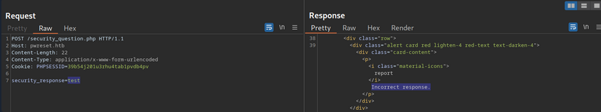
- ffuf
d41y@htb[/htb]$ ffuf -w ./city_wordlist.txt -u http://pwreset.htb/security_question.php -X POST -H "Content-Type: application/x-www-form-urlencoded" -b "PHPSESSID=39b54j201u3rhu4tab1pvdb4pv" -d "security_response=FUZZ" -fr "Incorrect response."
<SNIP>
[Status: 302, Size: 0, Words: 1, Lines: 1, Duration: 0ms]
* FUZZ: Houston
Manipulating the Reset Request
Another instance of a flawed password reset logic occurs when a user can manipulate a potentially hidden parameter to reset the password of a different account.
Consider the following password reset flow:
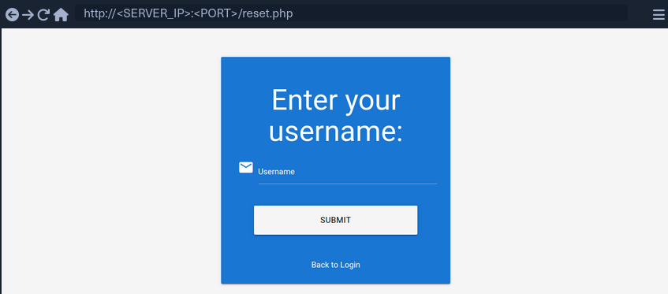
Use the demo account creds:
POST /reset.php HTTP/1.1
Host: pwreset.htb
Content-Length: 18
Content-Type: application/x-www-form-urlencoded
Cookie: PHPSESSID=39b54j201u3rhu4tab1pvdb4pv
username=htb-stdnt
Afterwards, supply the response to the security question:
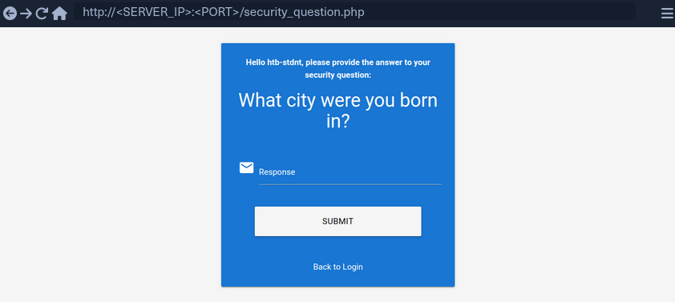
Supplying the security response ‘London’ results in the following request:
POST /security_question.php HTTP/1.1
Host: pwreset.htb
Content-Length: 43
Content-Type: application/x-www-form-urlencoded
Cookie: PHPSESSID=39b54j201u3rhu4tab1pvdb4pv
security_response=London&username=htb-stdnt
The username is contained in the form as a hidden parameter and sent along with the security response. Now, you can reset the user’s password:
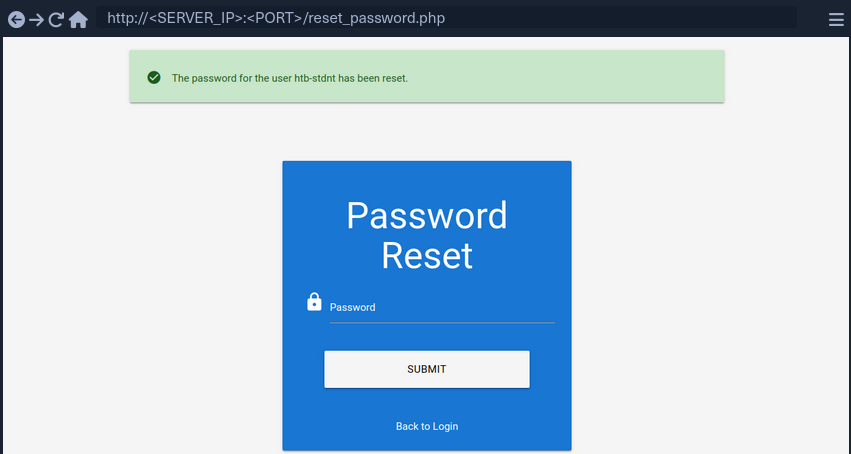
The final request looks like this:
POST /reset_password.php HTTP/1.1
Host: pwreset.htb
Content-Length: 36
Content-Type: application/x-www-form-urlencoded
Cookie: PHPSESSID=39b54j201u3rhu4tab1pvdb4pv
password=P@$$w0rd&username=htb-stdnt
Like in the previous request, the request contains the username in a separate POST parameter. Suppose the web app does properly verify that the usernames in both requests match. In that case, you can skip the security question or supply the answer to your security question and then set the password of an entirely different account. For instance, you can change the admin user’s password by manipulating the username parameter of the password reset request:
POST /reset_password.php HTTP/1.1
Host: pwreset.htb
Content-Length: 32
Content-Type: application/x-www-form-urlencoded
Cookie: PHPSESSID=39b54j201u3rhu4tab1pvdb4pv
password=P@$$w0rd&username=admin
To prevent this vuln, keeping a consistent state during the entire password reset process is essential. Resetting an account’s password is a sensitive process where minor implementation flaws or logic bugs can enable an attacker to take over other user’s accounts. As such, you should investigate the password reset functionality of any web app closely and keep an eye out for potential security issues.
Authentication Bypasses
via Direct Access
The most straightforwarded way of bypassing authentication checks is to request the protected resource from an unauthenticated context. An unauthenticated attacker can access protected information if the web app does not properly verify that the request is authenticated.
For instance, assume that you know that the web app redirects to the /admin.php endpoint after successful authentication, providing protected information only to authenticated users. If the web application relies solely on the login page to authenticate users, you can access the protected resource directly by accessing the /admin.php endpoint.
While this scenario is uncommon in the real world, a slight variant occasionally happens in vulnerable web applications.
Example:
if(!$_SESSION['active']) {
header("Location: index.php");
}
This code redirects the user to /index.php if the session is not active, i.e., if the user is not authenticated. However, the PHP script does not stop execution, resulting in protected information within the page being sent in the response body.
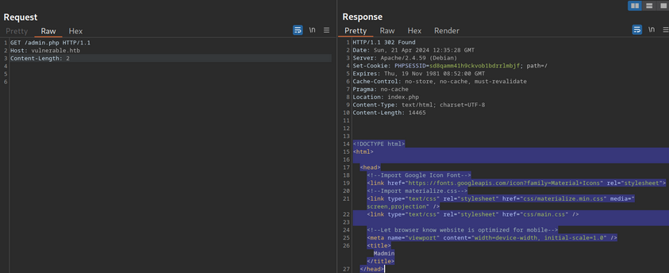
You can see, the entire admin page is contained in the response body. However, if you attempt to access the page in your web browser, the browser follows the redirect and display the login prompt instead of the protected admin page. You can easily trick the browser into displaying the admin page by intercepting the response and changing the status code from 302 to 200.
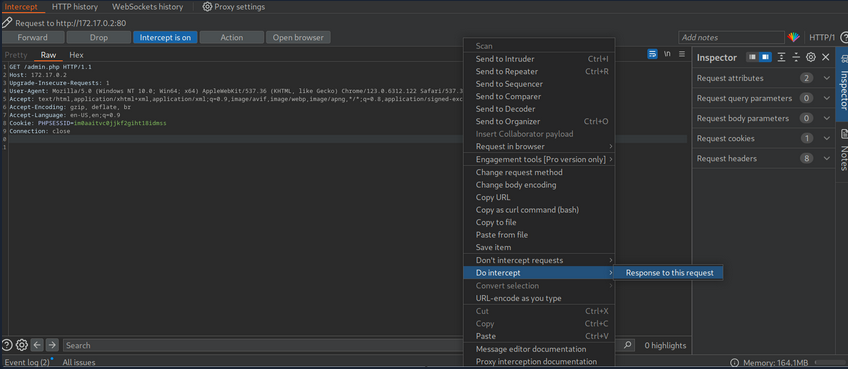
Afterward, forward the request by clicking on Forward. Since you intercepted the response, you can now edit it. To force the browser to display the content, you need to change the status code from 302 to 200.
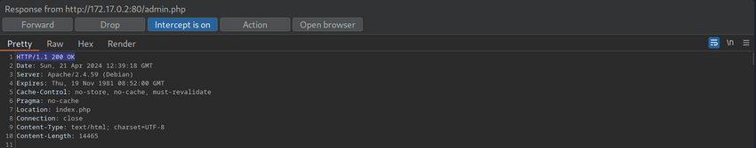
Afterward, you can forward the response. If you switch back to your browser window, you can see that the protected information is rendered.
To prevent the protected information from being returned in the body of the redirect response, the PHP script needs to exit after issuing the redirect.
if(!$_SESSION['active']) {
header("Location: index.php");
exit;
}
via Parameter Modification
An authentication implementation can be flawed if it depends on the presence or value of an HTTP parameter, introducing authentication vulnerabilities.
This type of vulnerability is closely related to authorization issues such as Insecure Direct Object Reference (IDOR) vulns.
In this example you are provided with credentials. After loggnig in, you are being redirected to /admin.php?user_id=183.
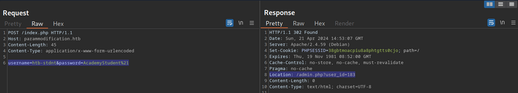
In your web browser, you can see that you seem to be lacking privileges, as you can only see a part of the available data.
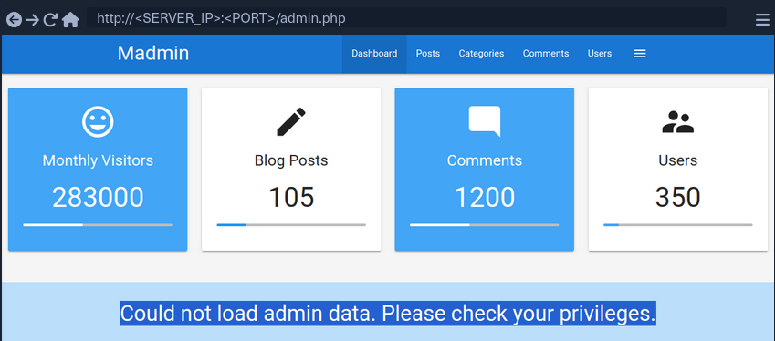
To investigate the purpose of the user_id parameter, remove it from your request to /admin.php. When doing so, you are redirected back to the login screen at /index.php, even though your session provided in the PHPSESSID cookie is still valid.
Thus, you can assume that the parameter user_id is related to authentication. You can bypass authentication entirely by accessing the URL /admin.php?user_id=183 directly.
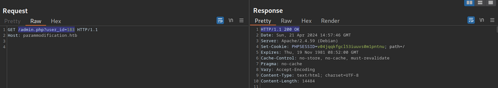
Based on the parameter name user_id, you can infer that the parameter specifies the ID of the user accessing the page. If you can guess or brute-force the user ID of an administrator, you might be able to access the page with administrative privileges, thus revealing the admin information.
Session (Token) Attacks
Session Tokens are unique identifiers a web app uses to identify a user. More specifically, the session token is tied to the user’s session. If an attacker can obtain a valid session token of another user, the attacker can impersonate the user to the web app, thus taking over their session.
Brute-Force Attack
Suppose a session token does not provide sufficient randomness and is cryptographically weak. In that case, you can brute-force valid session tokens. This can happen if a session token is too short or contains static data that does not provide randomness to the token, i.e., the token provides insufficient entropy.
For instance, consider a web app that assigns a four-character session token. A four-character string can easily be brute-forced.
This scenario is relatively uncommon in the real world. In a slightly more common variant, the session token itself provides sufficient lenght; however, the token consists of hardcoded prepended and appended values, while only a small part of the session token is dynamic to provide randomness. For instance, consider the following token assigned by a web app:
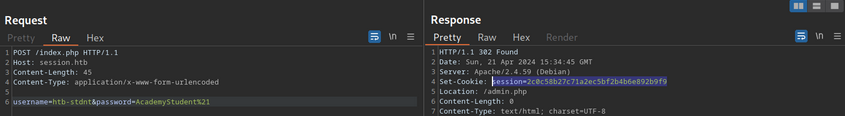
The session token is 32 characters long; thus, it seems infeasible to enumerate other users’ valid sessions. However, send the login request multiple times and take note of the session tokens assigned by the web application. This results in the following session tokens:
2c0c58b27c71a2ec5bf2b4b6e892b9f9
2c0c58b27c71a2ec5bf2b4546092b9f9
2c0c58b27c71a2ec5bf2b497f592b9f9
2c0c58b27c71a2ec5bf2b48bcf92b9f9
2c0c58b27c71a2ec5bf2b4735e92b9f9
All session tokens are very similar. In fact, of the 32 chars, 28 are the same for all five captured sessions. The session tokens consist of the static string 2c0c58b27c71a2ec5bf2b4 followed by four random chars and the static string 92b9f9. This reduces the effective randomness of the session tokens. Since 28 out of the 32 chars are static, there are only four chars you need to enumerate to brute-force all existing active sessions, enabling you to hijack all active sessions.
Another vulnerable example would be an incrementing session identifier. For instance, consider the following capture of successive session tokens:
141233
141234
141237
141238
141240
The session tokens seem to be incrementing numbers. This makes enumeration of all past and future sessions trivial, as you simply need to increment or decrement your session token to obtain active sessions and hijack other users’ accounts.
As such, it is crucial to capture multiple session tokens and analyze them to ensure that session tokens provide sufficient randomness to disallow brute-force attacks against them.
Attacking Predictable Session Tokens
In a more realistic scenario, the session token does provide sufficient randomness on the surface. However, the generation of session tokens is not truly random, it can be predicted by an attacker with insight into the session token generation logic.
The simplest form of predictable tokens contains encoded data you can tamper with. For instance, consider the following session token:
dXNlcj1odGItc3RkbnQ7cm9sZT11c2Vy
While this session might seem random at first, a simple analysis reveals that is is base64 encoded data:
d41y@htb[/htb]$ echo -n dXNlcj1odGItc3RkbnQ7cm9sZT11c2Vy | base64 -d
user=htb-stdnt;role=user
The cookie contains information about the user and the role tied to the session. However, there is no security measure in place that prevents you from tampering with the data. You can forge your own session token by manipulating the data and base64-encoding it to match the expected format. This enables you to forge an admin cookie.
d41y@htb[/htb]$ echo -n 'user=htb-stdnt;role=admin' | base64
dXNlcj1odGItc3RkbnQ7cm9sZT1hZG1pbg==
You can send this cookie to the web app to obtain administrative access.
The same exploit works for cookies containing differently encoded data. You should also keep an eye out for data in hex-encoding or URL-encoding.
Hex example:
d41y@htb[/htb]$ echo -n 'user=htb-stdnt;role=admin' | xxd -p
757365723d6874622d7374646e743b726f6c653d61646d696e
Another variant of session tokens contains the result of an encryption of a data sequence. A weak cryptographic algorithm could lead to privilege escalation or authentication bypass, just like plain encoding. Improper handling of cryptographic algorithms or injection of user-provided data into the input of an encryption function can lead to vulnerabilities in the session token generation. However, it is often challenging to attack encryption-based session tokens in a black box approach without access to the source code responsible for session token generation.
Further Session Attacks
Session Fixation
… is an attack that enables an attacker to obtain a victim’s valid session. A web app vulnerable to session fixation does not assign a new session token after a successful authentication. If an attacker can coerce the victim into using a session token chosen by the attacker, session fixation enables an attacker to steal the victim’s session and access their account.
For instance, assume a web app vulnerable to session fixation uses a session token in the HTTP cookie session. Furthermore, the web app sets the user’s session cookie to a value provided in the sid GET parameter. Under these circumstances, a session fixation attack could look like this.
- An attacker obtains a valid session token by authenticating to the web app. For instance, assume the session token is
a1b2c3d4e5f6. Afterward, the attacker invalidates their session by logging out. - The attacker tricks the victim to use the known session token by sending the following link:
http://vulnerable.htb/?sid=a1b2c3d4e5f6. When the victim clicks that link, the web app sets thesessioncookie to the provided value.
HTTP/1.1 200 OK
[...]
Set-Cookie: session=a1b2c3d4e5f6
[...]
- The victim authenticates to the vulnerable web application. The victim’s browser already stores the attacker-provided session cookie, so it is sent along with the login request. The victim uses the attacker-provided session token since the web app does not assign a new one.
- Since the attacker knows the victim’s session token
a1b2c3d4e5f6, they can hijack the victim’s session.
A web app must assign a new randomly generated session token after successful authentication to prevent fixation attacks.
Improper Session Timeout
A web app must define a proper Session Timeout for a session token. After the time interval defined in the session timeout has passed, the session will expire, and the session token is no longer accepted. If a web application does not define a session timeout, the session token would be valid infinitely, enabling an attacker to use hijacked session effectively forever.
For the security of a web app, the session timeout must be appropriately set. Because each web app has different business requirements, there is no universal session timeout value. For instance, a web app dealing with sensitive health data should probably set a session timeout in the range of minutes. In contrast, a social media app might set a session timeout of multiple hours.